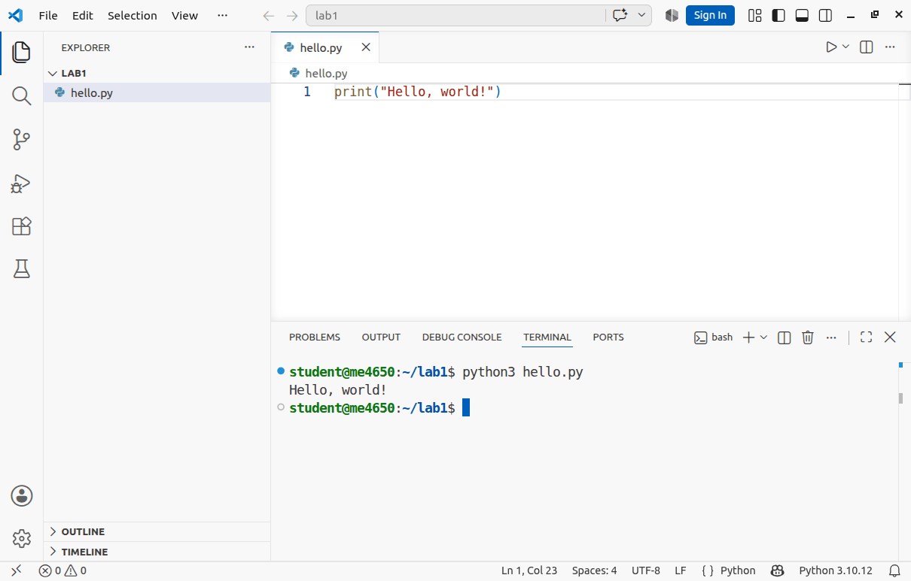
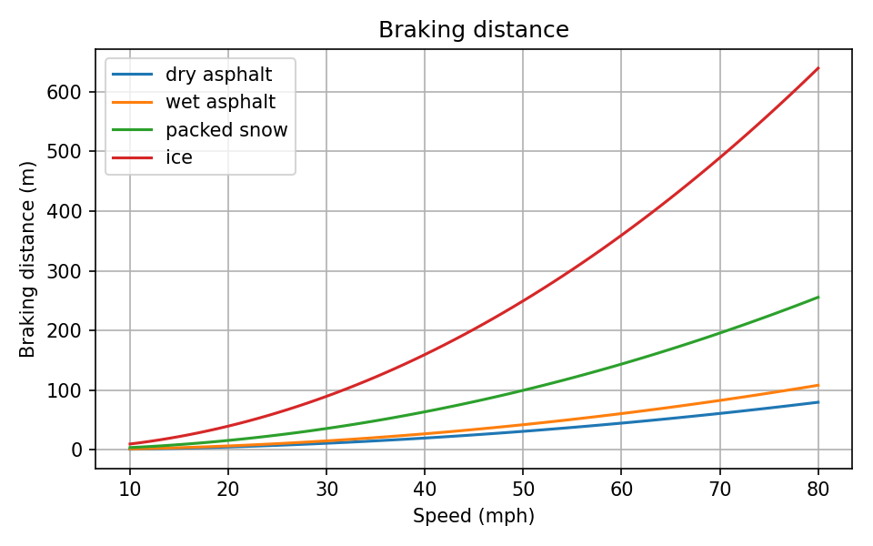
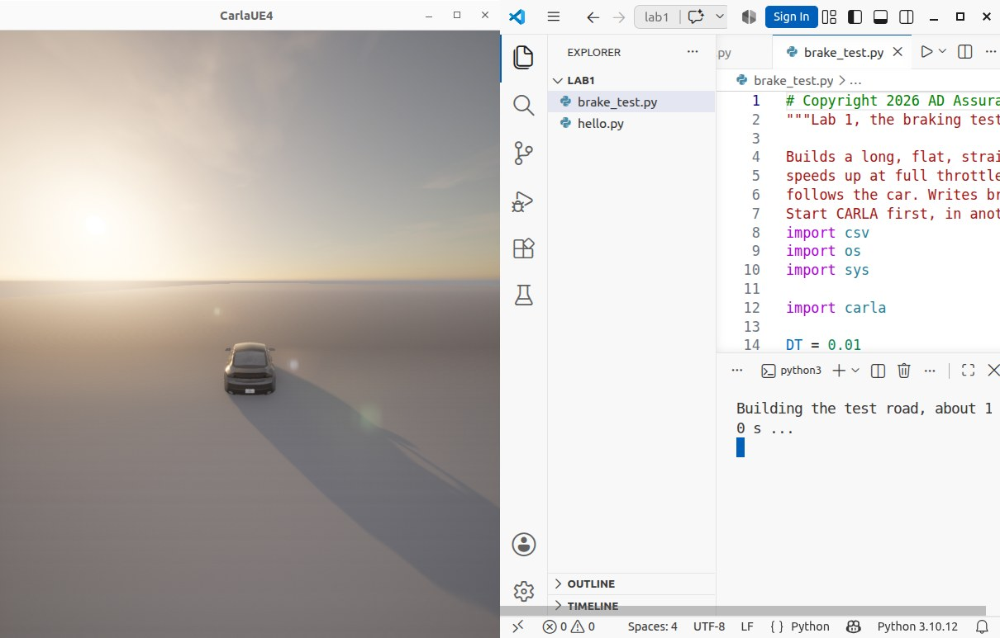
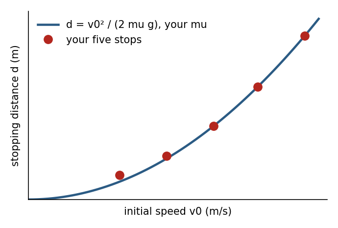

Lab 1: Linux, Python, Braking Test in CARLA
ME 4650/5950 Vehicle Dynamics & Control · © 2027 Zachary D. Asher, PhD · CC BY 4.0, code Apache-2.0
Launch Ubuntu (5 min)
- Plug the course USB drive into the computer. In Windows, click the power icon, hold Shift and click Restart.
- On the blue screen choose Use a device, then the USB drive. Ubuntu starts by itself.
- When you are done: press the power button once, click Power Off, wait until the computer is off, then remove the drive.
Before you start, read the Lab Report section at the end: it lists what to save as you go.
Task 1. The terminal and VS Code (20 min)
Goal: a folder lab1 in your home folder, holding hello.py, run from VS Code.
- Terminal (dock): make the folder, go into it, open it in VS Code:
mkdir lab1,cd lab1,code . - VS Code: New File
hello.py, one line that printsHello, world!, save with Ctrl+S. - Open its terminal panel, Ctrl+`, and run
python3 hello.py.
Check: your screen matches the picture. Take a screenshot with PrtSc (it lands in Pictures/Screenshots); it goes in your PDF.

Task 2. Braking distance in Python (40 min)
Goal: make this plot.
A car braking at a constant deceleration \(a_b\) from speed \(v_0\) stops in \(d = v_0^2 / (2 a_b)\). Dry asphalt, wet asphalt, packed snow and ice give \(a_b\) = 8.0, 5.9, 2.5 and 1.0 m/s². Download the layout an engineer would want, have your AI assistant fill it in, then check its code against each comment:
wget https://ad-assurance-lab.github.io/vehicle-dynamics/labs/wk01-braking/stopping.py
import numpy as np
import matplotlib.pyplot as plt
# 1. Constants at the top, units in the comment
MPH = ... # m/s per mph
# 2. The physics only: SI units in, meters out, nothing added
def stopping_distance(v0, a_b): # v0 in m/s, a_b in m/s^2
... # d = v0^2 / (2 a_b)
# 3. The four surfaces and their a_b (m/s^2) in one dictionary
surfaces = ...
# 4. Speeds 10 to 80 mph for the plot, converted to m/s once, here
mph = ...
v0 = ...
# 5. One curve per surface; each axis says what it shows and its unit
...
# 6. Check: dry asphalt from 30 and 60 mph (11.2 m and 45.0 m)
...

Check: dry asphalt stops in 11.2 m from 30 mph and in 45.0 m from 60 mph. About 56 m at 30 mph means the speed was never converted to m/s.
Task 3. How much grip do CARLA's tires have? (60 min)
- Terminal:
carla. Wait until its window shows a city (10 to 30 s), then put it on the left half: Super+← (Super is the Windows key). Leave this terminal alone. - VS Code on the right half (Super+→). In its terminal panel, in
lab1, download the test and run it from five speeds, in m/s:wget https://ad-assurance-lab.github.io/vehicle-dynamics/labs/wk01-braking/brake_test.py python3 brake_test.py 10
then 15, 20, 25 and 30. The first run replaces the city with a flat test road. Each run speeds a car up, brakes fully, prints the start speed, stopping distance and time, and writesbrake_10.csvand so on (time, speed, distance during the stop).
If something goes wrong: "time-out ... waiting for the simulator" means CARLA is not up yet; wait for its window and run the test again. "CARLA is already running": use that window. No network: save the files from this page in Firefox.

Goal: the tire friction coefficient \(\mu\).
Hard braking uses all the tire friction, so \(a_b = \mu g\) and \(d = v_0^2 / (2 \mu g)\), with \(g\) = 9.81 m/s².
Plot your five stops as dots, \(d\) against \(v_0\). Add the curve for a value of \(\mu\) (v0 = np.linspace(0, 32,
65), d = v0**2 / (2 * mu * 9.81)) and change \(\mu\) until the curve runs through the stops from
15 m/s up. Report \(\mu\) and \(a_b\).
Then plot speed against time from brake_30.csv and answer: Where does the trace leave a straight line,
and why? (Look closely at the first 0.2 s and at each kink.) Is one \(\mu\) enough to predict every stop?
Check: \(\mu\) comes out between 0.6 and 0.8. The 10 m/s stop sits above the curve: say why.

Lab Report: one PDF per pair, on eLearning (10 min)
Make it in Google Docs or Word in Microsoft 365 (Firefox is on the drive), download it as a PDF and upload it. Copy this outline into your document, keep each label as it is, and fill in every line. Paste code as text, not a picture.
- Names: both partners
- Task 1 screenshot: your screen
- Task 2 code: your
stopping.py - Task 2 plot: your plot
- Task 2 numbers: 30 mph: __ m; 60 mph: __ m
- Task 3 runs: a table, one row per run: start speed (m/s), stopping distance (m), stopping time (s)
- Task 3 fit plot: \(d\) against \(v_0\), dots and curve
- Task 3 results: \(\mu\) = __; \(a_b\) = __ m/s²
- Task 3 speed plot: speed against time, 30 m/s
- Task 3 trace: two sentences
- Task 3 one μ: two sentences
- AI log: three lines at most; your AI assistant can write it from your chat